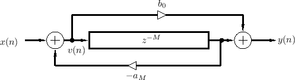

Hey Jaffa. Thanks for your reply! I mean clearly Schroeder type allpass section, not Schroeder Reverb at all.

https://www.dsprelated.com/freebooks/pasp/Allpass_Filters.html
Schroeder type allpass with modulateable delay. Anyways your idea about combining existing allpass with delay object in one diffusion tank sounds like working solution. Thanks! Gonna try it,
 should probably have quoted him instead of just replying to him...
should probably have quoted him instead of just replying to him... And it was your comment about G2 that made me remember Tim's AP filter, so I thought i'd mention it here
And it was your comment about G2 that made me remember Tim's AP filter, so I thought i'd mention it here